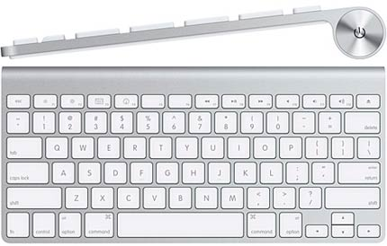

 I recently purchased an Apple Bluetooth Keyboard for use with the N800. Though it doesn't fold, it's small and lightweight, and at $80 it's an excellent value compared to its portable competition. Getting it to work on the N800 well took a bit of tweaking. I hope this is helpful to you if you get one as well.
Powering the Keyboard
You turn the keyboard on by pressing the power button on its right edge. A green light turns on and promptly turns off again, but the keyboard is on. There is, unfortunately, no other indication. You turn the keyboard off by pressing and holding the power button until the light turns on and off again. This is important: several times I have stuck the keyboard in my backpack and have found it typing on its own to my N800 while I carry it about.Setup
You pair the keyboard to the N800 by turning the keyboard on, going to Control Panel:Bluetooth, turning Bluetooth on, clicking on Devices:Edit, finding the keyboard (by default it's called "Apple Wireless Keyboard"), and selecting the keyboard. You enter in the pairing key on the keyboard by typing the number and then pressing RETURN.Next go to Control Panel:Hardware keyboard, and change the Keyboard to "Generic 105-key PC" and English (USA)" layout. By default it's set to Nokia SU-8W, which is wrong (the RETURN key won't work).
What Works out of the Box
All the main keys work, plus control. The caps lock light does not light up. None of the option or command keys do anything, nor the Fn ("function") key. Shift-Return is not enter. The function keys operate as indicated in Control Panel:Hardware keyboard: Shortcuts:| Task launcher | F3 |
| Application menu | F4 |
| Close | control-F4 |
| "Home View" (who knows) | F5 |
| Full screen toggle | F6 |
| "Plus" (zoom in) | F7 |
| "Minus" (zoom out) | F8 (irritatingly, these are backwards from the Nokia's buttons) |
| Task switcher | F9 |
| Minimize | control-F9 |
| Power | F12 (grrr, horrible position, I press it whenever I press delete) |
The first thing I do is remap the Power menu key to ctrl-F12 (click on "Edit" in the shortcuts window), so I don't accidentally turn my machine off.
Nokia screwed up badly here again: though you can remap the shortcuts to "regular" keys, or to control/shift/alt-function keys, you cannot remap them to other function keys. Fairly asinine.
Bugs
When under bluetooth load, the N800 freaks out and repeats keys, resulting in helllllllllllllllllllo instead of hello. This is rare for me but others are being driven nuts by it, especially when in combination with some other bluetooth device (like a phone) which puts load on the N800 and triggers the problem. Nothing fixes it, including the xset770 etc. commands which control key repeat. It's a bug, and apparently also happens in OS 2008.
Exactly one application doesn't work properly with the keyboard: MaemoPad+, an otherwise excellent app, interprets the Return key as a request to bring up the button bar instead of, say, you know, starting a new line of text.
Remapping Keys
Want page-up/page-down? Want some accents? Then you're going to need to remap keys.Previously I recommended using xmodmap for this task. No longer. This is because each successive version of OS 2008 has become increasingly hostile to xmodmap: now its use mostly results in crashes and reboots. If you're still interested in the old approach, see here.
Instead, the right way to do this is to create an xkb file. Unfortunately Nokia has made this unusually difficult. You have to:
- Be able to become root on your box.
- Be able to move files to certain root locations on your box.
Nokia's X-windows keyboard map files (xkb) are located in /usr/share/X11/xkb/symbols These files take two forms, though it's not immediately obvious. First there are files which define general classes of keyboards. Nokia permits exactly two of file of these on the N800: the PC105 keyboard (in pc) and Nokia's crummy SU-8W bluetooth keyboard (defined in To do this, we'll start by making a file called apple. This file will define the keys on the keyboard. In particular, we'll set it up to define the two option keys ("ALT" in X parlance) as being secondary shift keys like they are on the Mac, to enable us to have four keyboards: regular, shifted, option, and option-shifted. Then we define the various symbol keys. Finally, we'll change the command keys to be control keys as well, since most of Nokia's menu structures are handled using control keys. That lets Mac users type "Command-x", and Nokia will interpret it as "Control-x" and it'll do the right thing.
The big place where you can fool around here is in defining which symbols go with which key. If you'd like to change the symbols below, you can find all the key symbol names in X11's keysymdef.h file. Strip off the "XK_" to get the key symbol name. Here's a page with unicode symbol equivalents for all of the printable key symbols. Sadly, Nokia's fonts have a dearth of available symbols, though it does appear that they contain at least the union of Microsoft's Windows-1252 (so-called "ANSI"), Microsoft's Windows Glyph List 4, and Apple's MacRoman character sets (except U+F8FF, the Apple Logo).
The file I use for the 'apple' keyboard is here. I list it below for your reading pleasure. But first, after you've created this file and placed it in /usr/share/X11/xkb/symbols/apple you will also need to modify a file to tell Nokia that this file exists. You'll need to edit the file /usr/share/X11/xkb/rules/base.lst Right after the 'us English(USA)' variant, add the following line in the layout section:
After this, you should be able to pair with your bluetooth keyboard, then go into the Bluetooth keyboard control panel, choose the "Generic 105-key PC" keyboard, then the "Apple Bluetooth" Keyboard layout. And you're off and running!
The keyboard file below had the following goals:
Here's the file. Also, here is a highly useful PDF diagram of my mappings (check it out!), modulo a few new ones I've added, and the OmniGraffle file in case you want to modify it.
Some notes:
apple Apple Bluetooth
The Keyboard File
Here's the file; change the symbols as you like (regular, shifted, option, option-shifted), and leave NoSymbol where you'd like that key to produce nothing in that combination. Again, you can download it here:
default partial
xkb_symbols "basic" {
key <RALT> {
type[Group1]="ONE_LEVEL",
symbols[Group1] = [ ISO_Level3_Shift ]
};
key <LALT> {
type[Group1]="ONE_LEVEL",
symbols[Group1] = [ ISO_Level3_Shift ]
};
modifier_map Mod1 { <RALT>, <LALT> };
name[Group1]= "Apple";
// Alphanumeric section
key <TLDE> { [ grave, asciitilde, NoSymbol, NoSymbol ] };
key <AE01> { [ 1, exclam, exclamdown, NoSymbol ] };
key <AE02> { [ 2, at, trademark, EuroSign ] };
key <AE03> { [ 3, numbersign, sterling, NoSymbol ] };
key <AE04> { [ 4, dollar, cent, currency ] };
key <AE05> { [ 5, percent, infinity, U2030 ] };
key <AE06> { [ 6, asciicircum, section, NoSymbol ] };
key <AE07> { [ 7, ampersand, paragraph, doubledagger ] };
key <AE08> { [ 8, asterisk, enfilledcircbullet, degree ] };
key <AE09> { [ 9, parenleft, ordfeminine, periodcentered ] };
key <AE10> { [ 0, parenright, masculine, NoSymbol ] };
key <AE11> { [ minus, underscore, endash, emdash ] };
key <AE12> { [ equal, plus, notequal, plusminus ] };
key <AD01> { [ q, Q, oe, OE ] };
key <AD02> { [ w, W, Greek_SIGMA, doublelowquotemark ] };
key <AD03> { [ e, E, egrave, Egrave ] };
key <AD04> { [ r, R, registered, numerosign ] };
key <AD05> { [ t, T, latincross, caron ] };
key <AD06> { [ y, Y, yen, NoSymbol ] };
key <AD07> { [ u, U, ugrave, Ugrave ] };
key <AD08> { [ i, I, igrave, Igrave ] };
key <AD09> { [ o, O, ograve, Ograve ] };
key <AD10> { [ p, P, Greek_pi, Greek_PI ] };
key <AD11> { [ bracketleft, braceleft, leftdoublequotemark, rightdoublequotemark ] };
key <AD12> { [ bracketright, braceright, leftsinglequotemark, rightsinglequotemark ] };
key <AD13> { [ backslash, bar, guillemotleft, guillemotright ] };
key <AC01> { [ a, A, agrave, Agrave ] };
key <AC02> { [ s, S, ssharp, NoSymbol ] };
key <AC03> { [ d, D, Greek_delta, Greek_DELTA ] };
key <AC04> { [ f, F, eacute, Eacute ] };
key <AC05> { [ g, G, copyright, acute ] };
key <AC06> { [ h, H, enopensquarebullet, filledrectbullet ] };
key <AC07> { [ j, J, enfilledsqbullet, enopencircbullet ] };
key <AC08> { [ k, K, NoSymbol, NoSymbol ] };
key <AC09> { [ l, L, notsign, Lstroke ] };
key <AC10> { [ semicolon, colon, ellipsis, NoSymbol ] };
key <AC11> { [ apostrophe, quotedbl, ae, AE ] };
key <AB01> { [ z, Z, Greek_omega, Greek_OMEGA ] };
key <AB02> { [ x, X, approxeq, multiply ] };
key <AB03> { [ c, C, ccedilla, Ccedilla ] };
// I think I can do unicode for lozenge (25CA)
key <AB04> { [ v, V, squareroot, U25CA ] };
key <AB05> { [ b, B, integral, NoSymbol ] };
key <AB06> { [ n, N, filledtribulletup, leftarrow ] };
key <AB07> { [ m, M, filledtribulletdown, rightarrow ] };
key <AB08> { [ comma, less, lessthanequal, breve ] };
key <AB09> { [ period, greater, greaterthanequal, macron ] };
key <AB10> { [ slash, question, division, questiondown ] };
// End alphanumeric section
key <FK10> { [ Home, onesuperior, oneeighth, onequarter ] };
key <FK11> { [ End, twosuperior, threeeighths, onehalf ] };
key <FK12> { [ Page_Up, threesuperior, fiveeighths, threequarters ] };
key <FK13> { [ Page_Down, NoSymbol, seveneighths, NoSymbol ] };
// map the command keys to control so I can do cut paste etc.
key <LWIN> { [ Control_L ] };
key <RWIN> { [ Control_R ] };
modifier_map Control{ Control_L, Control_R, <LWIN>, <RWIN> };
};